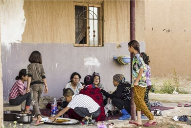

Corte III / Nicolás y DavidOrganización colectiva
Organización colectiva
y espacio habitable
El Alto–FEJUVE / Rojava–Jinwar
Recorridos visuales para exponer y consultar las evidencias del proyecto.

El Alto–FEJUVE / Rojava–Jinwar
Las flechas cambian de escena. La barra espaciadora destaca los elementos del diagrama. Puedes seleccionar actores, alternar mapas y ampliar fotografías. «Guion» muestra las notas del expositor; «Fuentes» abre el respaldo y sus límites. El cronómetro ayuda a ensayar y no avanza las escenas automáticamente.
Los esquemas son interpretaciones rotuladas. Los mapas municipales y las fotografías documentales mantienen su procedencia. No hay imágenes generadas con IA ni una simulación predictiva.
Cada exposición dispone de su propio recorrido, fuentes y archivos. Esta es la primera entrada. Las futuras se incorporarán como nuevas entradas sin reemplazarla.
Consultar la presentación originalDos diapositivas sobre mecanismos, capacidades y escenarios.
Abrir diapositivas ↗